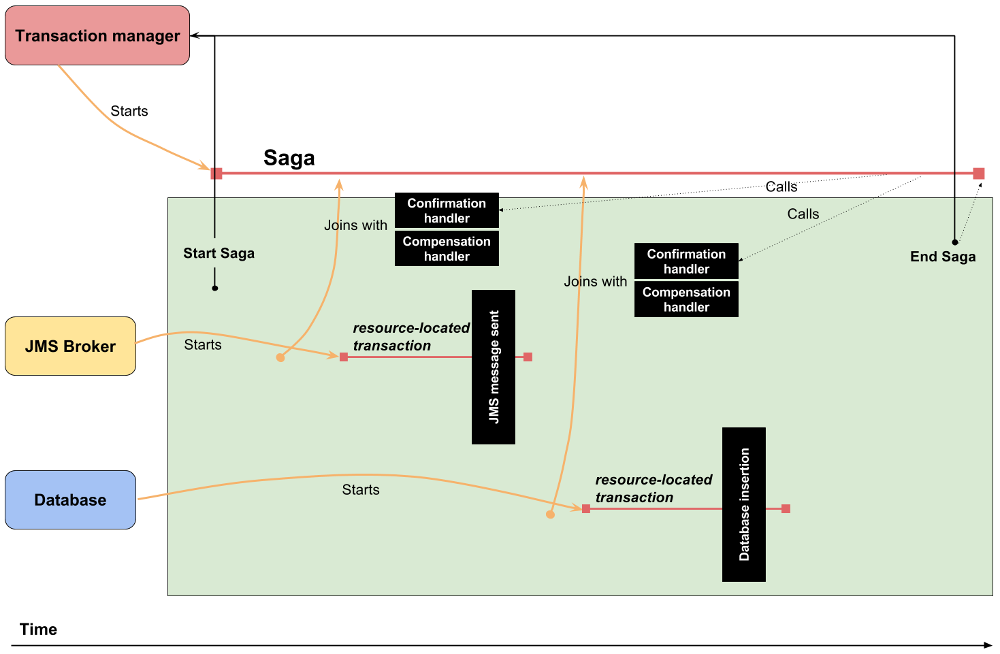

Ondra Chaloupka / ochaloup@redhat.com
An atomic unit of the work where everything or nothing is finished.
A C I D (Atomicity, Consistency, Isolation, Durability)
Saga paper from 1987

state store
routing slip
process manager
Sagas, Priceton University, 1987